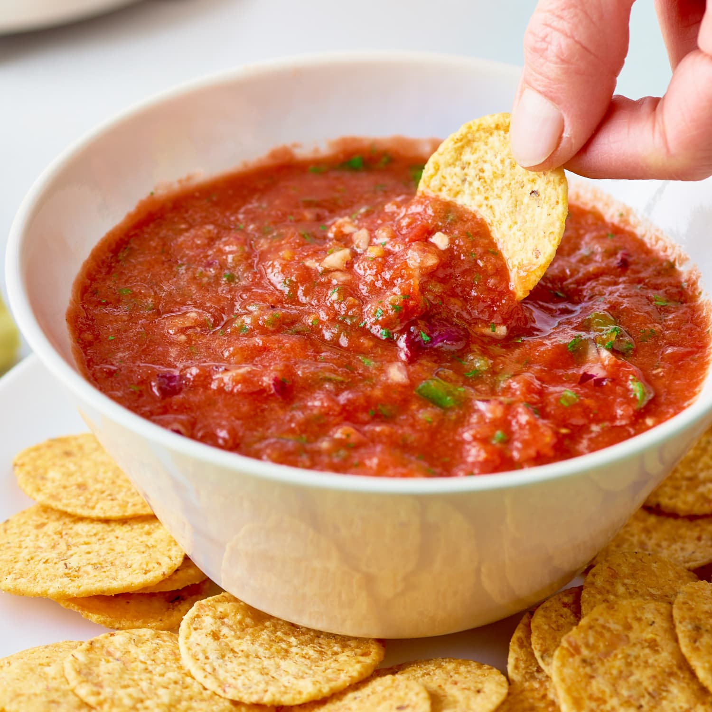

Salsa Sauce

Try out this secret recipe for the best homemade salsa!
This salsa sauce is delicious, healthy, easy to make,
offers a chunky texture and is brimming with absurd amounts of flavor!
That is why we think this is the best recipe for homemade salsa. Try it out!
If you're a salsa fan, we promise you wont regret it.
Ingredients
- 4 ripe tomatoes, cored and quartered
- 1 red onion, peeled and quartered
- 3 garlic cloves, peeled
- 3 jalapenos, stemmed and seeded (you can substitute 1-2 habanero
or serrano peppers.)
- 1/3 cup fresh cilantro
- 3 tablespoons fresh lime juice
- 2-3 teaspoons ground cumin
- 2-3 teaspoons sugar (optional)
- 1 1/2 teaspoons salt
- 15 ounces crushed San Marzano tomatoes (1 can)
- 4.5 ounces diced green chiles, mild, medium or hot (1 can)
Steps
- Place the fresh tomatoes, onion, garlic, peppers, cilantro, lime juice,
2 teaspoons cumin, 2 teaspoons sugar (if using), and salt in a food
processor. Pulse until the contents are fine and well blended.
- Pour in the crushed tomatoes and green chiles. Puree until mostly smooth.
Taste, then add more cumin and sugar if desired. Refrigerate until ready
to serve.